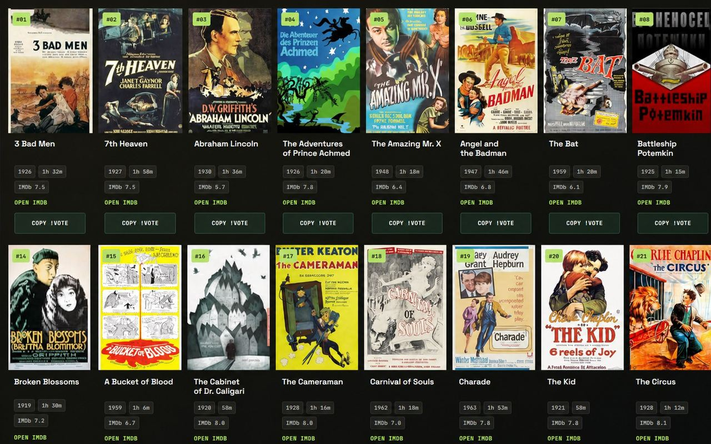
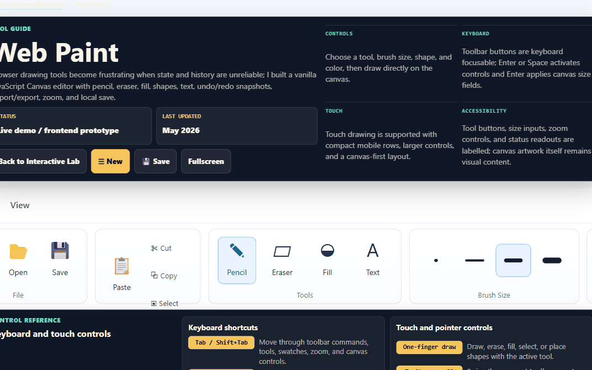

Muni Assets
Field operations workspace. Municipal assets, inspections, and work orders on one map.
A small portfolio of useful tools, workflow surfaces, and browser experiments.
Field operations workspace. Municipal assets, inspections, and work orders on one map.

Twitch chat voting that drives OBS playback.

Browser drawing tool. Brushes, shapes, undo, PNG export.